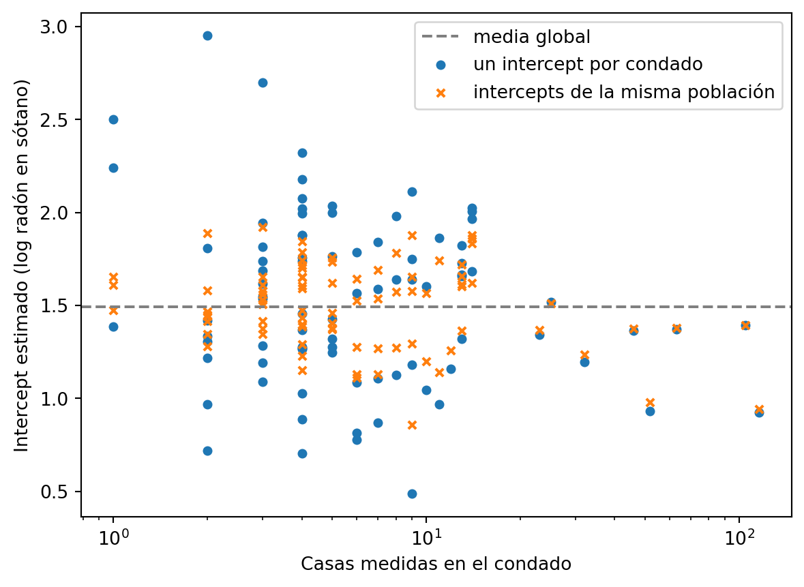

import numpy as np
import pandas as pd
import statsmodels.formula.api as smf
import matplotlib.pyplot as pltEl condado más radiactivo de Minnesota tiene dos casas medidas
exploraciones
Ajustas un intercept por grupo y el ranking que sale te mide el tamaño de muestra. El modelo jerárquico lo arregla, y en frecuentista cabe en tres líneas.
Lac Qui Parle es el condado con más radón de Minnesota. Lo dice el modelo: un intercept por condado, mínimos cuadrados, y ese sale el primero de los ochenta y cinco.
Lo que no dice el modelo es que ahí dentro hay dos casas.
El segundo del ranking tiene tres. El tercero tiene una.
Los datos son los de radón de Minnesota que Gelman usa en medio libro. Novecientas diecinueve viviendas, ochenta y cinco condados, la medición del gas en cada una y si se tomó en el sótano o en la planta de arriba.
Están repartidos fatal, y de ahí sale todo lo demás.
radon = pd.read_csv("radon.csv")
n_j = radon.groupby("county").size()
print("casas:", len(radon), "| condados:", len(n_j))
print("casas por condado -> min:", n_j.min(), "| mediana:", int(n_j.median()),
"| max:", n_j.max())
print("condados con 5 casas o menos:", (n_j <= 5).sum())casas: 919 | condados: 85
casas por condado -> min: 1 | mediana: 5 | max: 116
condados con 5 casas o menos: 46Mediana de cinco casas por condado. Cuarenta y seis condados de ochenta y cinco no llegan a seis viviendas medidas. Tres tienen una sola.
Y St Louis tiene ciento dieciséis.
Con eso hay que dar un número por condado. Hay tres formas de hacerlo y las tres salen de statsmodels.
Un intercept para Minnesota entera
La primera es hacer como si el condado no existiera.
Una regresión del log-radón contra el piso en el que se midió, y punto. Un intercept para las novecientas diecinueve casas.
pooled = smf.ols("log_radon ~ floor", data=radon).fit()
print(pd.DataFrame({"coef": pooled.params, "se": pooled.bse}).round(3)) coef se
Intercept 1.362 0.029
floor -0.586 0.070El intercept es el log-radón medio en un sótano de Minnesota. El coeficiente del piso es lo que se pierde al subir a la planta de arriba, que es bastante: el gas viene del suelo.
Los errores estándar son diminutos porque hay muchas casas. El modelo está comodísimo.
Y no sirve para lo que quiero. Lake y Lac Qui Parle reciben exactamente el mismo número.
Un intercept por condado
La segunda forma es el extremo contrario. Ochenta y cinco intercepts, uno por condado, cada uno estimado con las casas de ese condado y con ninguna más.
dummies = smf.ols("log_radon ~ 0 + C(county) + floor", data=radon).fit()
alpha_dum = dummies.params.filter(like="C(county)")
alpha_dum.index = [c[len("C(county)["):-1] for c in alpha_dum.index]
print("intercepts estimados:", len(alpha_dum))
print("pendiente de floor:", round(dummies.params["floor"], 3))intercepts estimados: 85
pendiente de floor: -0.689Ahora ordeno los condados por su intercept. Esto es lo que acabaría en una nota de prensa.
Yo he mandado tablas así. Nunca me preguntaron cuántos casos había detrás del primero.
tabla = pd.DataFrame({"n": n_j, "dummies": alpha_dum})
tabla = tabla.sort_values("dummies", ascending=False)
print(tabla.head(5).round(2))
print(tabla.tail(3).round(2)) n dummies
LAC QUI PARLE 2 2.95
WATONWAN 3 2.70
MURRAY 1 2.50
LINCOLN 4 2.32
WILKIN 1 2.24
n dummies
COOK 2 0.72
WASECA 4 0.71
LAKE 9 0.49Mira la columna de la izquierda antes que ninguna otra.
Los cinco condados más radiactivos de Minnesota suman once casas medidas. Los tres últimos suman quince.
Este ranking te mide el tamaño de muestra tanto como el radón. En un condado con una casa, la media es esa casa. Si dio alto, el condado se va al podio.
Y el modelo lo firma sin pestañear. Te devuelve 2,50 para Murray con la misma cara con la que te devuelve 0,92 para St Louis.
Los ochenta y cinco condados salen del mismo sitio
La tercera forma mete una idea que a las dos anteriores les falta.
Los condados de Minnesota se parecen entre sí. Ochenta y cinco valores sacados de una misma distribución, con su centro y su dispersión, y ninguno de ellos anda por ahí suelto.
Escrito con símbolos: los intercepts \(\alpha_j\) salen de una normal de media \(\mu\) y desviación \(\sigma_\alpha\). Esos dos parámetros también se estiman con los datos.
Si has visto esto antes, lo habrás visto en bayesiano, con su priori y medio post justificando por qué esa y no otra. En frecuentista se llama efecto aleatorio y lo ajusta MixedLM por máxima verosimilitud restringida. La misma idea, sin cadenas.
mixto = smf.mixedlm("log_radon ~ floor", data=radon,
groups=radon["county"]).fit(reml=True)
mu = mixto.fe_params["Intercept"]
sigma_y = np.sqrt(mixto.scale)
sigma_a = np.sqrt(mixto.cov_re.iloc[0, 0])
efectos = pd.Series({c: v.iloc[0] for c, v in mixto.random_effects.items()})
tabla["jerarquico"] = mu + efectos
tabla["mueve"] = tabla["jerarquico"] - tabla["dummies"]
print("media global:", round(mu, 3), "| floor:", round(mixto.fe_params["floor"], 3))
print("sigma_alpha:", round(sigma_a, 3), "| sigma_y:", round(sigma_y, 3))
print(tabla.head(5).round(2))
print(tabla.tail(3).round(2))
print(tabla.loc[["ST LOUIS", "HENNEPIN"]].round(3))media global: 1.492 | floor: -0.663
sigma_alpha: 0.315 | sigma_y: 0.726
n dummies jerarquico mueve
LAC QUI PARLE 2 2.95 1.89 -1.06
WATONWAN 3 2.70 1.92 -0.78
MURRAY 1 2.50 1.65 -0.85
LINCOLN 4 2.32 1.85 -0.48
WILKIN 1 2.24 1.61 -0.63
n dummies jerarquico mueve
COOK 2 0.72 1.28 0.56
WASECA 4 0.71 1.15 0.45
LAKE 9 0.49 0.86 0.37
n dummies jerarquico mueve
ST LOUIS 116 0.923 0.944 0.021
HENNEPIN 105 1.393 1.395 0.002Los dos números de arriba son nuevos. \(\sigma_\alpha\) = 0,315 mide cuánto se diferencian los condados entre ellos, y \(\sigma_y\) = 0,726 cuánto se diferencian las casas dentro de un condado. Aquí manda la segunda: dos casas del mismo condado se diferencian más entre ellas que dos condados entre ellos.
Debajo está la tabla de antes con una columna más.
Lac Qui Parle cae de 2,95 a 1,89. Murray baja 0,85. Lake, que estaba el último, sube 0,37.
St Louis se mueve dos centésimas. Hennepin, con ciento cinco casas, se mueve dos milésimas.
A cada condado le aplica el encogimiento que le toca según lo que sabe de él.
Los dos condados de una sola casa se descuelgan: Murray baja del tercer puesto al veintidós y Wilkin del quinto al veintiocho. Lac Qui Parle pierde más de un punto y aun así aguanta el segundo, porque sus dos casas dan muy alto. Los dos grandes se quedan exactamente donde estaban.
Bajarle el número a Lac Qui Parle suena a tapar el dato. Es lo mismo que pasaba con las alturas de padres e hijos: cuando un valor sale extremo, una parte de lo extremo es ruido, y la siguiente medición cae más cerca del centro.
En el gráfico se ve el embudo.
fig, ax = plt.subplots()
ax.axhline(mu, color="gray", linestyle="--", label="media global")
ax.scatter(tabla["n"], tabla["dummies"], s=18,
label="un intercept por condado")
ax.scatter(tabla["n"], tabla["jerarquico"], s=18, marker="x",
label="intercepts de la misma población")
ax.set_xscale("log")
ax.set_xlabel("Casas medidas en el condado")
ax.set_ylabel("Intercept estimado (log radón en sótano)")
ax.legend()
plt.show()
A la izquierda, donde hay una, dos o tres casas, los puntos del modelo de dummies ocupan el gráfico entero. Las cruces del jerárquico están apretadas contra la línea gris.
Pasadas las veinticinco casas la diferencia ya es de centésimas. A partir de ahí el condado se ha ganado que le crean.
El rango entero de intercepts pasa de 2,46 a 1,07.
Por qué esto te importa
Rankings de grupos haces todas las semanas, aunque no los llames así. Conversión por campaña. Ticket medio por tienda. Tasa de fallo por proveedor. Churn por segmento.
Y siempre hay grupos pequeños ahí metidos: la tienda que abrió en marzo, el proveedor del que llevas cuatro pedidos, la campaña que duró un fin de semana.
Esos son justo los que salen primeros y últimos. Tienen menos datos, así que tienen más sitio para desviarse. Por eso los dos extremos de cualquier ranking se llenan de ellos.
Ordenar por la media los sube al podio. Poner un mínimo de observaciones y filtrar los tira a la basura, con lo poquito que sabías de ellos dentro.
El modelo jerárquico hace la tercera cosa. Se los queda y les baja el volumen en proporción a lo que sabe de cada uno.
Son tres líneas de statsmodels. Lo caro es acordarte de que el grupo pequeño está ahí.